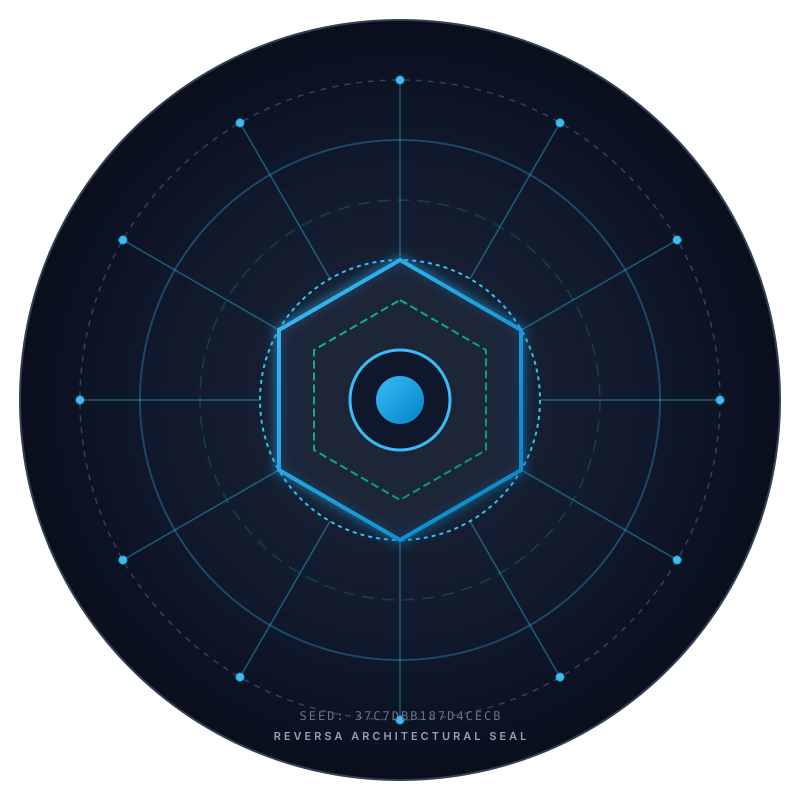

Documentação Interativa do Sistema
Portal visual e técnico gerado pelo Framework Reversa a partir da engenharia reversa e migração completa do repositório ducarmolocacoes. Explore a topologia, modelos 3D, métricas, regras de negócio e especificações SDD da nova aplicação Desktop em Go.

Módulos de Exploração Arquitetural
Metáfora urbana Code City com 27 prédios mapeando linhas de código (altura) e complexidade ciclomática (área), divididos por camadas core, storage, ui e cmd.
Grafo de dependências com 104 arestas direcionadas, repulsão de física em tempo real e verificação de zero ciclos acíclicos nos pacotes Go.
Mapeamento comparativo side-by-side: monólito legado JHipster (MySQL/Elasticsearch) vs aplicação Desktop Go pura (Gio UI, Cryptopower e SQLite).
Dashboards estatísticos com Treemap de LOC por pacote, Top 10 complexidade (locacao_list.go, locacao_repo.go), proporção de testes unitários e distribuição por camadas.
15 conceitos formais do domínio de locação de trajes, regras contábeis em centavos (sinal de 20%, saldo mandatório), proteção de agenda de 7 dias e motor de PDF.
Apresentação navegável em 8 slides executivos com suporte a setas do teclado e modo tela cheia para onboarding rápido na nova aplicação Desktop Go.
Especificações das Features do Sistema (7 Units SDD)
Reserva de trajes em Gio UI, máquina de estados, regra de 20% de sinal e bloqueio de agenda de 7 dias.
Jurídico & PDF Contratos & MinutasSubstituição dinâmica de tags em Go e geração direta de contratos PDF oficiais prontos para impressão.
Cadastro Clientes & LocatáriosGestão cadastral (CPF, RG, telefones), busca instantânea local via SQLite FTS5 e histórico de locações.
Estoque Catálogo de TrajesVestimentas festivas, vestidos de gala, smokings, valor unitário, grade de tamanhos e agenda de disponibilidade.
Configuração Tipos de EventosClassificação das celebrações (Casamento, 15 Anos, Formatura) e contextualização contratual.
Segurança Operadores LocaisControle de acesso desktop simplificado para operadores no balcão da loja física, sem complexidade de JWT.
Governança Administração & BancoRotinas de backup simples do arquivo SQLite, modo WAL, integridade referencial e CLI migrator.